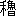

此の集を出すに方つて、子規居士と余との関係を思ひ出さずに居られぬ。居士は余の俳句の指導者である。而して是れは誰れも知る所で、今、改めて言ふの要もないから嘗て居士の生前に余の物した一二の文を摘記して、いさゝか今昔の感を叙する代りとした。
憶ふ昔と云ふ程でもないが、明治二十五年の一月其頃寄宿舎に居た子規子始二三の人が俳句と云ふものを作るので、僕も少々真似がして見たくなつて、
四十五の夢をさまして初日の出
元日や仏に成るも此の心
元日や仏に成るも此の心
と遣つたが、どうも恥しいので人に見せられない。其後暫くたつて、一寸子規子に見せた。すると、是はほんたうの発句になつて居て中々面白い、と意外の賞賛（実は奨励）であつたので、僕も遂に乗気が出来て来た。それから宿題や競吟などと毎日のやうに勉強して、傘百句唐辛子百五十句などと随分沢山作つた。然るに諸子からは余り評判が好くないのみならず、自分で今度は出来たと思つた句が不首尾で、是れはいけないと思つた句にお点がつく。一向何の事か分らない。少々腹も立つて来た、畢竟するに標準と云ふものがなかつたからで、ありやうはまだ一部の句集も熟読して居なかつたのである。そこで、どうかして一番諸子の意表に出る進歩がして見たく、それには古人の句集を読むのが好からうと思ひ、其頃諸子仲間で猿蓑を貴んで居ることを知つて居たから、内々之を研究した。其傍に作つた句が、
山寺は松より暮るゝ時雨かな
しぐるゝや母屋の小窓は薄月夜
初霜を戴き連れて黒木売
から／＼と日は吹き暮れつ冬木立
吹きはづす板戸の上を霰かな
しぐるゝや母屋の小窓は薄月夜
初霜を戴き連れて黒木売
から／＼と日は吹き暮れつ冬木立
吹きはづす板戸の上を霰かな
此外まだ四五句もあつたらう。或る日之を子規子に見せて、今度は責任を以て作つた、批難があるなら答弁すると冗談半分に云つた。そこで子規子はつく／″＼と吟じて居たが、頗る御機嫌顔になられて、成程是は大分様子が変つた、どれも面白い、どうしたのかと問はれたから、実は内々猿蓑を読んだと白状して大笑ひになつた。是が何でも同年の十月頃であつて、やつと諸子の仲間入が出来たのである。其後二三年間、即ち碧子虚子々などの勇将が現はれて来らるゝまでは僕も少々威張つて居た。（ホトヽギス三十二年七月号碧子の俳句評釈の文中摘記）
僕は子規子に対して、年齢と経歴とに於ては郷里の長者先輩である。寄宿生としては監督したこともある。又漢詩を添削したこともある。是が今以て子規子より翁又は先生の称呼を甘受せねばならぬ所以である。併し、人も知る如く俳句に於ては僕は子規子の徒弟である。子規子は僕の師である。先達である。兎も角も僕が今日俳人否俳人らしく人に云はるゝやうになつたのは全く子規子の賜である。子規子なかつせば僕は勃率［＃「勃率」はママ］たる理窟一点張の人で終はるのであつた。故に内藤素行を生んだのは父母で、内藤鳴雪を造つたのは子規子である。尤も其教を受けたと云ふも、諄々然として講明し、俛焉として聴従したと云ふでもない。毎々団欒して句作したり、又句の批評を受けなどして屡々蒙を啓いたことは勿論であれど、此外多くは意見が衝突して議論したのである。甚しきは喧嘩に近き争ひをしたこともある。而して其当時僕は何所までも自ら信ずる所あつて屈せなかつた。然るに早きは一月遅きは一年もたつと十の八九は子規子の説に服して来る。今日まで満十年の間此の如き教化を受けたことは実に幾度であるか、分からぬ。而して其時々子規子に向つて自白し降参したことも多いが、まだ明言する機会を得ぬのもあるやうだ。要するに講説批評で注入せられるよりは、斯く討論の末自ら悟つた方が明瞭である。堅固である。（ホトヽギス三十五年六月号獺祭書屋俳句帖抄に就きての文中摘記）
僕は子規子に対して、年齢と経歴とに於ては郷里の長者先輩である。寄宿生としては監督したこともある。又漢詩を添削したこともある。是が今以て子規子より翁又は先生の称呼を甘受せねばならぬ所以である。併し、人も知る如く俳句に於ては僕は子規子の徒弟である。子規子は僕の師である。先達である。兎も角も僕が今日俳人否俳人らしく人に云はるゝやうになつたのは全く子規子の賜である。子規子なかつせば僕は勃率［＃「勃率」はママ］たる理窟一点張の人で終はるのであつた。故に内藤素行を生んだのは父母で、内藤鳴雪を造つたのは子規子である。尤も其教を受けたと云ふも、諄々然として講明し、俛焉として聴従したと云ふでもない。毎々団欒して句作したり、又句の批評を受けなどして屡々蒙を啓いたことは勿論であれど、此外多くは意見が衝突して議論したのである。甚しきは喧嘩に近き争ひをしたこともある。而して其当時僕は何所までも自ら信ずる所あつて屈せなかつた。然るに早きは一月遅きは一年もたつと十の八九は子規子の説に服して来る。今日まで満十年の間此の如き教化を受けたことは実に幾度であるか、分からぬ。而して其時々子規子に向つて自白し降参したことも多いが、まだ明言する機会を得ぬのもあるやうだ。要するに講説批評で注入せられるよりは、斯く討論の末自ら悟つた方が明瞭である。堅固である。（ホトヽギス三十五年六月号獺祭書屋俳句帖抄に就きての文中摘記）
下の子規居士の画と句とは居士の病革まる少し以前に乞ひ得たもので永き紀念として附載した。（編注 本集では割愛した）
此の集の編纂に就いて水巴子の労を執られたことの多大なるは余の深く感謝する所である。
明治四十一年十二月六日
鳴雪記
元日 元日や一系の天子富士の山
元日や親子七人梅の花
正月 爆竹や南京町は正月す四方拝 四方拝果てゝや木々に風渡る
朝拝 朝拝や春は曙一の人
粥杖 粥杖に冠落ちたる不覚かな
書初 青楼に酔ひて其角が試筆かな
砂文字に書初もする乞食かな
初荷 暁の提灯暗き初荷かな喰積 喰積もなくて酒のむ蜜柑十
輪飾 輪飾や吾は借家の第一号
半弓に輪飾かけし承塵かな
年礼 年礼や眉ゑがきたる八代目
藤六が平六具して御慶かな
打ちつれて夜の年賀や婿娘
遣羽子 遣羽子の裾にからまる小犬かな打ちつれて夜の年賀や婿娘
福引 福引やひく手数多の主は誰れ
万歳 万歳や古き千代田の門柱
万歳の鼓をあふる竈かな
猿引 妻猿の舞はですねたる一日かな春駒 春駒や美人もすなる物貰ひ
鳥追 鳥追や柳の軒端梅の門
水祝 十郎の後ろ姿や水祝
はした女も同じ心や水祝
歌かるた かるたして帰る雨夜や最合傘薺 俎に薺のあとの匂ひかな
きぬ／＼や薺に叩き起されつ
摘むや薺小町の墓を二めぐり
若菜 若菜摘み／＼京の日は暮れぬ摘むや薺小町の墓を二めぐり
初鴉 我庵は上野に近く初鴉
弁天の巳年美し町の春
許されて色著る春の旦かな
種瓢の発刊を祝して
洛陽の紙の価や筆始
青年と酒汲みて
筆はじめ我が斑白の髭染めん
許されて色著る春の旦かな
種瓢の発刊を祝して
洛陽の紙の価や筆始
青年と酒汲みて
筆はじめ我が斑白の髭染めん
二月 梅散りて鶴の子寒き二月かな
春寒 柑子むく妹が爪先春寒し
日永 永き日や鈍太郎殿の手車
文殊語り舎利弗眠る日永かな
伐り出だす木曾の檜の日永かな
暖か 暖かや君子の徳は風なれば伐り出だす木曾の檜の日永かな
春夕 瑞籬や狐子を生む春の夕
春宵 臥し慣れて左枕や宵の春
春夜 春の夜の靱つくろふ女かな
春の夜の刀預る恋もあり
春の夜の鳩のうめきや絵天井
朧 菜の花に朧一里や嵯峨の寺春の夜の鳩のうめきや絵天井
行春 行春の鴉啼くなり女人堂
行春の召させ参らす草鞋かな
夏近し 川上に鶯啼きて夏近し彼岸 乞食の子も孫もある彼岸かな
爺婆の蠢き出づる彼岸かな
曲水 盃の花押し分けて流れけり雛 古雛の衣や薄き夜の市
其中にほうこ雛の寒げなり
一年や虫糞払ふ雛の衣
地震ふつて雛天上より落ち給ふ
紙鳶 落ちもせで旋風の中の紙鳶一年や虫糞払ふ雛の衣
地震ふつて雛天上より落ち給ふ
パチンコや暮れ行く凧のあり所
大凧の静かに下る雨の中
出代 出代の下女も祇王と仏かな大凧の静かに下る雨の中
出代りてこゝに小梅の茶店かな
踏青 踏青や裏戸出づれば桂川畑打 山畑は月にも打つや真間の里
日あたりや江戸を後ろに畑打つ
汐干狩 旅人の汐干見て行く馬上かな壺焼 壺焼の壺傾きて火の崩れ
淡雪 淡雪に月も二日のあはれなり
春風 曳き連るゝ恩賜の駒や春の風
陽炎 陽炎や石の八陣潮落ちて
陽炎に昔の夢や平家蟹
春雨 春雨や酒を断ちたるきのふけふ
春雨に杉苗そだつ小山かな
景清の番傘さして春の雨
春雨や蓬の宿の白拍子
春雨に牛やるといじもいじかな
春の月 片側は雪積む屋根や春の月景清の番傘さして春の雨
春雨や蓬の宿の白拍子
春雨に牛やるといじもいじかな
小蔀に人のけはひや春の月
朧月 朧月釣する蜑の小唄かな
朧月千人斬の噂かな
浅茅生の宿と答へて朧月
浅茅生の宿と答へて朧月
山笑ふ 夕嵐山は笑はずなりにけり
春の川 春の川手紙まろめて流しけり
水温む 桶に浮く丸き氷や水ぬるむ
焼山 焼山の歯朶ぱち／＼と終夜
焼野 野は焼けて妻と籠らん蔭もなし
苗代 子鴉や苗代水の羽づくろひ
苗代に夕風渡る緑かな
猫の恋 玉とつてまだ恋知らぬ小猫かな
恋猫や鮑の貝の片思ひ
猫塚に恋草生ふる小雨かな
鶯 鶯に朝飯遅き下宿かな猫塚に恋草生ふる小雨かな
鶯に禄賜はりし初音かな
鶯の声聞きしより妻孕み
鶯の大根畑に初音かな
雉 二羽打ちて啼かずなりたる雉子かな鶯の声聞きしより妻孕み
鶯の大根畑に初音かな
雲雀 子雲雀や比叡山颪起ちかぬる
檜扇に招きかへさん揚雲雀
帰雁 倶利伽羅の雪やなだれん帰る雁囀り 囀りのひねもす南枝北枝かな
雀子 雀子や走りなれたる鬼瓦
若鮎 若鮎のそれほど水は早からず
若鮎の小石がくれにこゝかしこ
諸子 さゞ波や古き都の初諸子蛤 汁椀に大蛤の一つかな
蝶 蝶々の慕ふ花輪や棺の上
城門に蝶の飛び交ふ日和かな
蜂 蜂王の都遷しや花の暮蚕 蚕棚守る行燈暗し物の本
葉がくれに白う肥えたる蚕かな
里の女や蚕飼の神の朝詣
庭の木に山繭買ひし葉のこぼれ
里の女や蚕飼の神の朝詣
庭の木に山繭買ひし葉のこぼれ
梅 夕月や納屋も厩も梅の影
灯ともして夜行く人や梅の中
野の梅や折らんとすれば牛の声
鉢に咲く梅一尺の老木かな
垣越えて梅折る人や明屋敷
梅散りて狐啼くなり経王寺
白梅は兄紅梅は姉にこそ
胡砂吹くや梅なき国の砦守
招牌や銭とる家の梅の花
紅梅 紅梅や左府の大臣の牛車野の梅や折らんとすれば牛の声
鉢に咲く梅一尺の老木かな
垣越えて梅折る人や明屋敷
梅散りて狐啼くなり経王寺
白梅は兄紅梅は姉にこそ
胡砂吹くや梅なき国の砦守
招牌や銭とる家の梅の花
浜寺や紅梅褪せて雨多き
紅梅や司たまはる古匠
椿 大木の椿咲きけり山社紅梅や司たまはる古匠
桜 奈良阪や桜に憩ふ油売
山寺はお茶一椀の桜かな
小謡や桜月夜の二条衆
賭弓や女もまじる山桜
人恋し夕山桜黒本尊
遠乗や桜かざゝぬ人もなし
懐中の二分に桜の夜明かな
夜嵐や桜散り込む鐘ヶ淵
風呂の戸を出づれば桜吹雪かな
炭竈は雨にくづれて遅桜
牛の角すぼめて通れ花の中
花一山紫衣の僧あり若衆あり
山門や左右に花の十二坊
花暮れて二条わたりの犬の声
朝の雨花は一重ぞ哀れなる
帯かばふ女心や花の雨
火熨斗する花見衣やよべの雨
散る花に内道場の灯かな
伴僧が味噌に摺込む落花かな
掃き落す屋根も籬も落花かな
桃 税軽き十戸の村や桃の花小謡や桜月夜の二条衆
賭弓や女もまじる山桜
人恋し夕山桜黒本尊
遠乗や桜かざゝぬ人もなし
懐中の二分に桜の夜明かな
夜嵐や桜散り込む鐘ヶ淵
風呂の戸を出づれば桜吹雪かな
炭竈は雨にくづれて遅桜
牛の角すぼめて通れ花の中
花一山紫衣の僧あり若衆あり
山門や左右に花の十二坊
花暮れて二条わたりの犬の声
朝の雨花は一重ぞ哀れなる
帯かばふ女心や花の雨
火熨斗する花見衣やよべの雨
散る花に内道場の灯かな
伴僧が味噌に摺込む落花かな
掃き落す屋根も籬も落花かな
一村を日に蒸しこめて桃の花
うたゝ寝の覚むれば桃の日落ちたり
桃の小径手拭首に里女
梨の花 北面に歌召されけり梨の花うたゝ寝の覚むれば桃の日落ちたり
桃の小径手拭首に里女
下京や鬼出る家の梨の花
李の花 人吝き隣の李咲きにけり子鴉の母呼ぶ李月夜かな
銀杏の花 銀杏の花や鎌倉右大臣木蓮花 此門の勅額古し木蓮花
躑躅 躑躅ぬけば石ころ／＼と転がるよ
雉の子を追ひつまくつゝ躑躅かな
明樽の躑躅淋しや二百文
躑躅活けて女経読む山の中
木瓜の花 木瓜の花土手に喰ひ入る夕日かな明樽の躑躅淋しや二百文
躑躅活けて女経読む山の中
柳 船曳のあたまで分ける柳かな
船人が米とぐ岸の柳かな
荷車の柳曳きずる埃かな
橋の柳雪駄直しの日は落ちぬ
とらまへて衣売る店の柳かな
山吹 山吹の雨に灯ともす隣かな荷車の柳曳きずる埃かな
橋の柳雪駄直しの日は落ちぬ
とらまへて衣売る店の柳かな
菜の花 菜の花や絵馬つけて行く小荷駄馬
菜の花や唄面白き薬売
花大根 清正の木遣音頭や花大根水草生ふ 水そよ／＼池の水草生ひそめぬ
竹の秋 竹の秋月に小督の墓掃かん
春草 公事勝ちし己が畑や春の草
海苔 新海苔の麁朶による波よるさへや
賺されし笑薬や春の宿
夕月やこゆるぎ戻る春の人
烏帽子著て舟さす人や春の池
俳句大観に題す
大千や爛々として春の星
天明俳句集に題す
中興の春や一草一木も
無常
此春は凧飛ばしたる人もなし
波字春季結
天地丸日永の波に浮かべけり
梅若忌
春雨の一日は稚児に泣く日かな
此頃の志士が口真似して
炭を嘗め薪に臥す世ぞ二日灸
戦死せし某の遺吟を整理して
落椿赤き心を拾ひけり
上野にて
初花や西郷どんは尻向けて
品川
誰が占めて天王山の花の幕
偕楽園
一泉一石昔ながらの桜散る
紅緑の新婚に
偕に寝て桃の日南の暖く
俳調の変易に感じて
菊は古るし人形つくる躑躅かな
俳諧月令筌に題す
月花や人生三万六千日
夕月やこゆるぎ戻る春の人
烏帽子著て舟さす人や春の池
俳句大観に題す
大千や爛々として春の星
天明俳句集に題す
中興の春や一草一木も
無常
此春は凧飛ばしたる人もなし
波字春季結
天地丸日永の波に浮かべけり
梅若忌
春雨の一日は稚児に泣く日かな
此頃の志士が口真似して
炭を嘗め薪に臥す世ぞ二日灸
戦死せし某の遺吟を整理して
落椿赤き心を拾ひけり
上野にて
初花や西郷どんは尻向けて
品川
誰が占めて天王山の花の幕
偕楽園
一泉一石昔ながらの桜散る
紅緑の新婚に
偕に寝て桃の日南の暖く
俳調の変易に感じて
菊は古るし人形つくる躑躅かな
俳諧月令筌に題す
月花や人生三万六千日
五月 大沼や蘆を離るゝ五月雲
一笠の首途は安き五月かな
短夜 短夜の麓に余吾の海白し
短夜や蓬が上の廿日月
カンテラや明易き夜の道普請
短夜を援兵急ぐ山路かな
短夜や百万遍に朝日さす
夏の夜 夏の夜を物喰ひ過ぎて寝苦しきカンテラや明易き夜の道普請
短夜を援兵急ぐ山路かな
短夜や百万遍に朝日さす
暑 午睡さめて尻に夕日の暑さかな
竹の根の蝉となりたる暑さかな
涼 涼しさや魚とる蝦夷がうつろ舟
涼しさや妹が水干立烏帽子
遺言も涼しき老の枕なか
遺言も涼しき老の枕なか
幟 矢車に朝風強き幟かな
殿原が馬で見て行く幟かな
初幟こゝにも日本男児あり
菖蒲湯 灯のさして菖蒲片寄る湯槽かな初幟こゝにも日本男児あり
矢数 大矢数太郎いまだ冠せず
田植 入海や磯田の植女舟で来る
竹植る 植ゑ終へて繩ほどきたる葉竹かな
夜振 町中や夜振戻りの頬被り
蟲干 蟲糞や本箱叩く土用干
納涼 夜納涼や糺の川辺人白し
川床に女負ひ行く納涼かな
江楼に納涼の宴や燭あまた
海中の岩飛びわたる納涼かな
滝殿 滝殿に人あるさまや灯一つ江楼に納涼の宴や燭あまた
海中の岩飛びわたる納涼かな
行水 行水の巫女に慣れよる小鹿かな
青簾 青簾鯉の庖丁見そなはす
青簾有馬細工を並べたり
竹婦人 入道の裸うとまし竹婦人更衣 更へ／＼て我世は古りし衣かな
帷子 帷子の洗ひ晒しや三葵
くらべ合ふ帷子の絵や禿どち
羅 羅を曳くや天女の天津風夏帽子 夏帽の紐噛みとめる嵐かな
日傘 さしつれて若紫の日傘かな
蚊帳 釘うつて蚊帳吊る主まうけかな
何すねて日高き蚊帳に妹一人
暁の片足出たる蚊帳かな
十哲のあたま集むる蚊帳かな
夕月や蚊帳の浪よる妹が顔
風入れて揺き出でたる紙帳かな
扇 よき人の襟にさしたる扇かな暁の片足出たる蚊帳かな
十哲のあたま集むる蚊帳かな
夕月や蚊帳の浪よる妹が顔
風入れて揺き出でたる紙帳かな
五六本物書きすてし扇かな
新茶 新茶煮て此緑陰の石を掃ふ鮓 鮓つけて真清水に手を洗ひけり
葛水 葛水や百雷臍を下りけり
梅酢 揉み出だす唐紅の梅酢かな
五月雨 五月雨の狐火うつる小窓かな
大海のぺたり／＼と五月雨
出水して橋守る声や五月雨
五月雨の荷物著きたる戸口かな
五月雨や蓑笠集ふ青砥殿
五月雨に燭して開く秘仏かな
五月晴 大船の白帆干したり五月晴出水して橋守る声や五月雨
五月雨の荷物著きたる戸口かな
五月雨や蓑笠集ふ青砥殿
五月雨に燭して開く秘仏かな
夕立 日は峰に夕立つ杉の木の間かな
青嵐 青嵐云ふ師は薬を採り去ると
風薫る 風薫る袖や社参の那須七騎
雲の峰 雲の峰裏は明るき入日かな
雷 池に落ちて水雷の咽びかな
夏山 夏山の城あり／＼と夜明けたり
夏山の大木倒す谺かな
青田 門残る侍町の青田かな堰き入るゝ青田の水に目高かな
清水 山僧の大太刀洗ふ清水かな
野狐の尾をひたし去る清水かな
ばた／＼と鴉むれ居る清水かな
ばた／＼と鴉むれ居る清水かな
時鳥 月がさす厠の窓や時鳥
時鳥遠侍の鼾かな
蝙蝠 蝙蝠の昼飛ぶ塔や五智如来金魚 貰ひ来る茶碗の中の金魚かな
螢 船頭の夕飯照らす螢かな
蚤 朝夷奈の蚤とりかぬる鎧かな
水馬 水馬一つ処を上りけり
水馬かさなり合うて流れけり
蝸牛 でゝ虫の角に夕日の光りかな百日紅 怠らぬ棒の稽古や百日紅
若葉 切り据ゑて桐ふし／″＼の若葉かな
生垣の梢そろはぬ若葉かな
葉桜 葉桜や田舎見たさの初瀬籠り夏木立 駆けぬける汽車の嵐や夏木立
与謝の海や藍より出でゝ夏木立
松落葉 掃き寄せる松の落葉や鹿の糞青梅 垣越しに梅の実くるゝ女かな
林檎 盛物に林檎のつやゝ仏の灯
若竹 二日月うら若竹の影もなし
牡丹 臨幸を乞ひ奉る牡丹かな
大妓小妓起き出でゝ牡丹日午なり
牡丹画く筆端に紅の雫かな
茨の花 茨垣の夏知る一花両花かな牡丹画く筆端に紅の雫かな
雨晴れて茨に夕日の二三尺
紫陽花 思ふ事紫陽花の花にうつろひぬ蝦夷菊 蝦夷菊や古き江戸絵の三度摺
昼顔 昼顔や蓬の中の花一つ
夕顔 夕顔や馬洗ひ居る武士の妻
葛の花 玉葛の花とも云はず刈り乾しぬ
菖蒲 村雨の菖蒲分け行く田舟かな
花菖蒲物の具したる女かな
蓴 木蘭の櫂にもつるゝ蓴かな手を以て舟やる池や蓴生ふ
夏草 夏草に屋根切り組みし空地かな麦 買臣が錦に麦の埃りかな
蓼 蓼摘て厨へ走しる少女かな
麻 麻畑百姓ありて欠びかな
桐芽の男子をまうけたるに
五月鯉吹き出だしたる此子かな
人を悼む
五月雨に濡れて飛び行く魂もあらん
牛伴送別
行雲や五十三亭さみだるゝ
定靖君の新館
此窓に何読み給ふ若楓
上野徳川廟
夏木立五代の御霊鎮まりぬ
五月鯉吹き出だしたる此子かな
人を悼む
五月雨に濡れて飛び行く魂もあらん
牛伴送別
行雲や五十三亭さみだるゝ
定靖君の新館
此窓に何読み給ふ若楓
上野徳川廟
夏木立五代の御霊鎮まりぬ
七月 瘧落ちて文月の夜の灯かな
立秋 目薬に涼しく秋を知る日かな
初秋 初秋の折ふし須磨の便りかな
朝寒 朝寒や三井の仁王に日の当る
夜寒 寝返れば夜寒の簀子音すなり
提灯で見るや夜寒の九品仏
山越えや馬も夜寒の胴ぶるひ
此道に石泣くといふ夜寒かな
戸の外に折檻の子の夜寒かな
馬方の馬に物云ふ夜寒かな
湖に山火事うつる夜寒かな
夜長 つく／″＼と古行燈の夜長かな山越えや馬も夜寒の胴ぶるひ
此道に石泣くといふ夜寒かな
戸の外に折檻の子の夜寒かな
馬方の馬に物云ふ夜寒かな
湖に山火事うつる夜寒かな
襖画の女物言はぬ夜長かな
異見すんで子の立ち去りし夜長かな
長き夜や僧となるべき物思ひ
一日の日記しるして夜長かな
小大工が飯喰ふ秋の夜長かな
秋日和 難船の物干す秋の浜日和異見すんで子の立ち去りし夜長かな
長き夜や僧となるべき物思ひ
一日の日記しるして夜長かな
小大工が飯喰ふ秋の夜長かな
秋晴 秋晴れて五重の塔の掃除かな
二百十日 堂嶋や二百十日の辻の人
行秋 行秋に狐つきたり鍛冶が弟子
行秋や不破の関屋の臼の音
行秋の天西南に傾きぬ
行秋の天西南に傾きぬ
七夕 七夕を寝てしまひけり小傾城
押し立てゝ早散る笹の色紙かな
呼びつれて星迎へ女や小磯まで
魂祭 魂祭吾れは親より老いにけり呼びつれて星迎へ女や小磯まで
魂棚の前に飯喰ふ子供かな
魂棚の飯に露おく夕かな
墓参 墓拝む後ろに高き芒かな魂棚の飯に露おく夕かな
燈籠 提げて行く燈籠濡れけり傘の下
燈籠も二つ比翼の誓ひかな
燈籠や僧の留守する古女
流燈会 面白う魂も灯も流るゝよ燈籠や僧の留守する古女
走馬燈 酔眼の況んや廻り燈籠かな
摂待 摂待に女具したる法師かな
秋の蚊帳 つゞくりの遂に破れて秋の蚊帳
新米 新米に娘も売らでとりつきぬ
新米の俵も青き貢かな
踊 両刀を人に預けて踊りけり
母酔うて古き手振りの踊かな
鬼若も山を下りて踊かな
踊るべく人集まりぬ夕堤
月更けて恋の部に入る踊かな
砧 小城下も秋知り顔の砧かな鬼若も山を下りて踊かな
踊るべく人集まりぬ夕堤
月更けて恋の部に入る踊かな
花火 戸あくれば上らずなりし花火かな
ふりかゝる花火の花や城の松
浜殿とおぼしき空や昼花火
屋根越に僅かに見ゆる花火かな
乗込の役者の船や花火散る
角力 小角力の相合傘や橋の上浜殿とおぼしき空や昼花火
屋根越に僅かに見ゆる花火かな
乗込の役者の船や花火散る
小袴の股立とりて相撲かな
小角力の水打つて居る門辺かな
角力取る二階を叱る主かな
寄せつけぬ眼くばりや指角力
松の木に太鼓打つなり村相撲
案山子 案山子にも女心や夜の道小角力の水打つて居る門辺かな
角力取る二階を叱る主かな
寄せつけぬ眼くばりや指角力
松の木に太鼓打つなり村相撲
御製にも入らで朽ちぬる案山子かな
猪の牙にかけたる案山子かな
添水 通夜の窓ごとり／＼と添水かな猪の牙にかけたる案山子かな
鳴子 若君に引かせ参らす鳴子かな
旅駕の眠り驚く鳴子かな
こゝろみに毛見の衆も曳く鳴子かな
毛見 毛見の僕三径の菊に尿し去るこゝろみに毛見の衆も曳く鳴子かな
柚味噌 柚子味噌の釜も併せて喰らひけり
天長節 年々に天長節の日和かな
初嵐 初嵐御館の小門人叩く
暁や鐘撞き居れば初嵐
秋風 税苛し莨畑の秋の風
秋風や黄楊の小櫛の歯をあらみ
両刀を抜けば竹なり秋の風
秋雨 秋雨や手燭ふり照らす不入の間両刀を抜けば竹なり秋の風
秋の空 秋の空我れに鳥往き鳥返る
秋の空芙蓉の花に定まりぬ
秋の雲 秋の雲ちぎれ／＼てなくなりぬ天の川 朝立や馬のかしらの天の川
古城は北に聳えて天の川
天の川故郷の空に傾きぬ
新月 新月や畳替へたる此夕天の川故郷の空に傾きぬ
三日月 三日月に女ばかりの端居かな
月 法螺貝や月の大峯吹き下す
横雲やいざよふ月の芝の海
名月 名月や橋高らかに踏み鳴らし後の月 後の月右に有磯の海寒し
稲妻 聴衆は稲妻浴びて辻講義
野分 野分吹く篠蝋燭や六地蔵
我が声の吹き戻さるゝ野分かな
野分して浪打ちあぐる小池かな
引きおろすフラフ吹かるゝ野分かな
学校に子供まだ居る野分かな
野分して人呼ぶ声や屋根の上
古城を莚で囲ふ野分かな
鶏の窓に飛び込む野分かな
霧 行列を横に吹き断つ狭霧かな野分して浪打ちあぐる小池かな
引きおろすフラフ吹かるゝ野分かな
学校に子供まだ居る野分かな
野分して人呼ぶ声や屋根の上
古城を莚で囲ふ野分かな
鶏の窓に飛び込む野分かな
露 道の辺や露深草の捨車
ひきすてし山車の人形や朝の露
朝露や矢文を拾ふ草の中
朝露や矢文を拾ふ草の中
秋の山 秋の山経読む程は日の残る
秋の水 墓道古りぬ首洗ひたる秋の水
暁や仙人掌上の秋の水
秋の水或る僧は毒と申しけり
山の井や我が顔うつる秋の水
秋の水湛然として日午なり
初潮 初潮を汲む青楼の釣瓶かな秋の水或る僧は毒と申しけり
山の井や我が顔うつる秋の水
秋の水湛然として日午なり
花野 別荘の材木積みし花野かな
鹿 宵闇や鹿に行きあふ奈良の町
雁 足もとに雁聞く雨の峠かな
雁啼くや蘆の茎矢に作るべく
百舌鳥 村祭鵙取る人の余所心眼白 眼白籠抱いて裏山ありきけり
鴫 野径十歩我に鴫立つ夕かな
秋の蚊 豹と呼んで大いなる蚊の残りたる
鱸 鱸提げて酒屋を叩く月夜かな
舟虫 桟橋に舟虫散るよ小提灯
蟷螂 蟷螂の真青に垣の雨晴るゝ
屁ひり虫は智なり蟷螂は勇なり
紅葉 大木の四五枚残る紅葉かな
岨道を横に駕舁く紅葉かな
柳散る 里の女の衣干柳散りそめぬ吾が弓の拙き柳散りそめぬ
銀杏散る 下馬札の奥は銀杏の落葉かな木犀 木犀の雨に簾をおろしけり
木槿 花木槿揚名の助の宿古りぬ
柿 夜をこめて柿のそら価や本門寺
芭蕉 芭蕉破れて雨風多き世となりぬ
したゝかに雨だれ落つる芭蕉かな
中門の額見事なる芭蕉かな
萩 吹き落ちて萩にもつるゝ鴉かな中門の額見事なる芭蕉かな
萩芒京へ一里の筧かな
大名に傘参らせよ萩の花
菊 菊に文戸に物申す女の童大名に傘参らせよ萩の花
吾が庵は菊に二尺の日南かな
灯ともせば只白菊の白かりし
荻 荻の葉にをり／＼さはる夜舟かな灯ともせば只白菊の白かりし
末枯 末枯に真赤な富士を見つけゝり
草の実 ひきほどく朝顔の実のがら／＼に
 田に鶏あそぶ夕日かな
松茸 釜で出す松茸飯や客の中
家売りて妻伴ふや秋の旅
秋の灯人は周易に朱を点す
憂きめみし酒の病や須磨の秋
菅菰の発行を喜びて
陸奥は名物多し露の秋
矢の根井
井の秋や小石投げ込む村童
獺祭書屋
暁や溲瓶の中のきり／″＼す
子規一周忌
下手な句を作れば叱る声も秋
従軍の人を送る
此別れ馬嘶いて秋高し
月我へ返事
朝寒に夜寒に酒は量なし
某が銃猟免許を受けたるに
鳥逐うて案山子の群に入り給へ
小女忌辰
俤や廻り燈籠の十七年
函館新聞の天長節号へ
熊祭るアイヌも踊れ菊の酒
愚庵 二句
普門品二十六夜の月の僧
其愚には及ぶべからず芋頭
本来無一物
稲妻のあとは野山もなかりけり
梨園碩果落つ
荒事の柿の素袍も秋の風
名優凋落
秋は馬場の大盃も手向かな
海晏寺門前に鳥酔白雄の跡をとぶらひて
秋風の隣ありけり墓二つ
水巴が大母の年忌に句を求めければ
御顔は知らねど露のきり／″＼す
人の甘干を贈りこしゝに
甘干の心や老を老として
旧居の普請場を見て
足場かく下や松菊猶存す
秋の灯人は周易に朱を点す
憂きめみし酒の病や須磨の秋
菅菰の発行を喜びて
陸奥は名物多し露の秋
矢の根井
井の秋や小石投げ込む村童
獺祭書屋
暁や溲瓶の中のきり／″＼す
子規一周忌
下手な句を作れば叱る声も秋
従軍の人を送る
此別れ馬嘶いて秋高し
月我へ返事
朝寒に夜寒に酒は量なし
某が銃猟免許を受けたるに
鳥逐うて案山子の群に入り給へ
小女忌辰
俤や廻り燈籠の十七年
函館新聞の天長節号へ
熊祭るアイヌも踊れ菊の酒
愚庵 二句
普門品二十六夜の月の僧
其愚には及ぶべからず芋頭
本来無一物
稲妻のあとは野山もなかりけり
梨園碩果落つ
荒事の柿の素袍も秋の風
名優凋落
秋は馬場の大盃も手向かな
海晏寺門前に鳥酔白雄の跡をとぶらひて
秋風の隣ありけり墓二つ
水巴が大母の年忌に句を求めければ
御顔は知らねど露のきり／″＼す
人の甘干を贈りこしゝに
甘干の心や老を老として
旧居の普請場を見て
足場かく下や松菊猶存す
初冬 初冬の竹緑なり詩仙堂
初冬の海向いて居る鳥居かな
小春 枯枝に青き鳥啼く小春かな湖を抱いて近江の小春かな
寒さ 月寒し袈裟打ち被る山法師筏士の丹波の寒さ語りけり
冬の夜 冬の夜や小犬啼きよる窓明り年の暮 質に入ると知らぬが仏年の暮
年の夜 年の夜を河内通ひやまめ男
神の旅 紅毛も一人の神を送るなり
夷子講 夷子講位もちたる人もあり
袴著 袴著や銀杏吹き散る男阪
冬籠 耳うとき嫗が雑仕や冬籠り
書を積みし机二つや冬籠り
冬籠初狂言の稿成りぬ
寒声 寒声は女なりけり戻り橋冬籠初狂言の稿成りぬ
布団 夜二夜同じ夢見る布団かな
美しき蒲団干したり十二欄
衾 繕ひて幾夜の冬や紙衾火燵 床下に風の通ひや古火燵
掃除中火燵荒涼のけしきあり
飛び下りる子供を叱る火燵かな
出勤に暫し間のある火燵かな
火を入れて櫓冷たき火燵かな
埋火 埋火に天地寂たる庵かな飛び下りる子供を叱る火燵かな
出勤に暫し間のある火燵かな
火を入れて櫓冷たき火燵かな
懐炉 棚に置きて帯占め直す懐炉かな
炭 炭焼の顔洗ひ居る流れかな
炭団 突砕いて紅散乱す炭団かな
榾 大学を孫に教ふる榾火かな
横はる五尺の榾やちよろ／＼火
頭巾 脇僧は錦の頭巾著たりけり
猿に著せて我に似たりや古頭巾
橋の上に人待つ振りの頭巾かな
頭巾借りて君が姿に似るべうも
紙衣 二君には仕へ申さぬ紙衣かな橋の上に人待つ振りの頭巾かな
頭巾借りて君が姿に似るべうも
茎漬 茎漬の強抗にして石軽ろし
風呂吹 風呂吹の一切づゝも一句かな
納豆 納豆汁三十棒の痛みかな
卵酒 嵯峨の雪卵酒しに羽紅起つ
事納 灯ともして下城の人や事納
古暦 人もをし人もうらめし古暦
煤掃 天井の天女の煤も払ひけり
煤掃や庭に居並ぶ羅漢達
煤掃くや我が梅の檐月の窓
御書院に煤掃く竹の落葉かな
年忘 忘れけり四十九年の何とやら煤掃くや我が梅の檐月の窓
御書院に煤掃く竹の落葉かな
年越 玉の緒よ年越蕎麦の長かれと
時雨 しぐるゝや女の著たる赤合羽
凩 凩の吹き荒るゝ中の午砲かな
凩に鳥羽絵の鴉吹き散るよ
寒月 寒月に黒船遠きはしけ哉雪 大雪の谷間に低き小村かな
女一人僧一人雪の渡し哉
雪丸げ もてあます女力や雪まろげ霜 折りくべて霜湧き出づる生木かな
初霜をいたゞき連れて黒木売
冬田 大水の砂山残す冬田かな
砲台の下に冬田の道せまし
鯨 曳き上げし鯨の上に五六人
鷹 隼の物食ふ音や小夜嵐
鷦鷯 三十三才網干す下を友ありき
千鳥 夢に鳴く八島屏風の千鳥かな
水鳥 火事跡や水鳥遊ぶ池の中
鴨 撃柝に鴨起つ城の大手かな
河豚 河豚汁や門に彳む最明寺
鮟鱇 鮟鱇の口から下がる臓腑かな
牡蠣 牡蠣飯の釜画きたる行燈かな
茶の花 茶の花に裏門遠き野寺かな
茶の花をまたいで出でつ墓の道
冬桜 行宮に冬の桜を奉る枯柳 枯柳只ばら／＼と靡きけり
冬木立 ゆら／＼と朴の古葉や冬木立
塔を塗る朱のしたゝりや冬木立
冬木立三つ四つ鴉飛んで行く
落葉 内陣に御あかし揺ぐ落葉かな冬木立三つ四つ鴉飛んで行く
枯菊 大菊の見事に枯れし花壇かな
枯蓮 蓮枯れて婆々になりたる菩薩かな
水仙 水仙や端渓の硯紫檀の卓
水仙に古書画商ふ小家かな
文机や水仙の芽の一二寸
草枯 草枯れて矢を負ふ猪の人立す文机や水仙の芽の一二寸
草枯や人買泊まる三軒家
枯芒 人埋めし印の笠や枯芒 比叡山
三千の大衆黙して冬の嶺
題芭蕉十哲図
此団居凡兆の居ぬ寒さかな
人事匆忙
行く年よ我れいまだ蕎麦も喰ひ了へず
芭蕉翁賛
年々にとしより給ふ時雨かな
山陽途中
菅笠の阿弥陀が駅をしぐれけり
松山城
初雪や松の梢の天主閣
佐倉の山中に孫の徹女を荼毘して
霜柴の我が目に痛き煙かな
鳴雪句集 終
（明治四十二年一月刊）